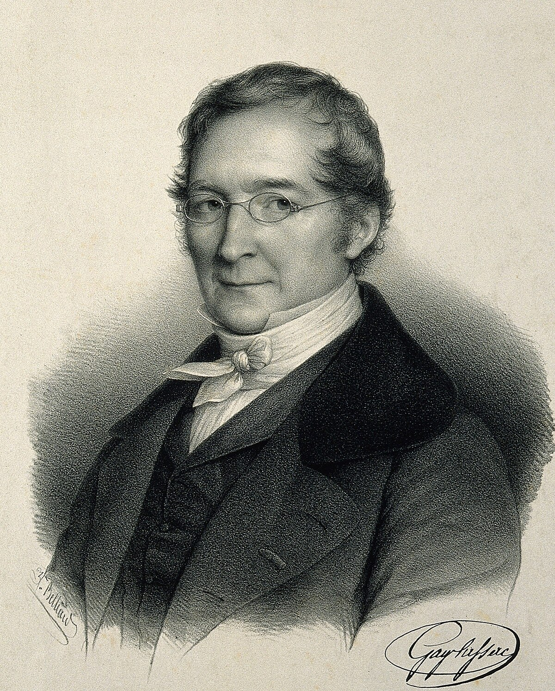
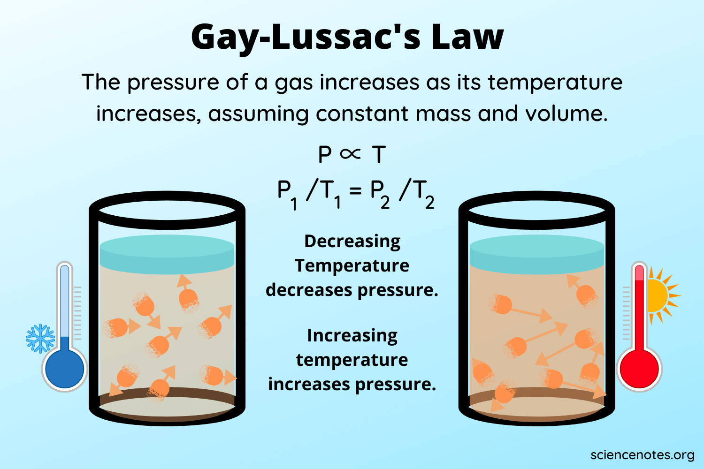

https://byjus.com/chemistry/gay-lussacs-law/
https://chem.libretexts.org/Bookshelves/Introductory_Chemistry/Introductory_Chemistry_(CK-12)/14%3A_The_Behavior_of_Gases/14.05%3A_Gay-Lussac's_Law
https://en.wikipedia.org/wiki/Joseph_Louis_Gay-Lussac
Joseph Louis Gay-Lussac (Born in December 6, 1778 in Saint-Léonard-de-Noblat, France—died May 9, 1850 in Paris, France) was a French chemist and physicist. He was well-known for his discovery of Gay Lussac's Law in 1808 and it was published in 1809.
The Gay-Lussac’s Law states that pressure exerted by gas varies directly with the absolute temperature of the gas while being kept at a constant volume
Formula: P1/T1 = P2/T2
An instance of Gay Lussac's Law in real life is when a pressurized aerosol can such as a spray paint can is heated, which results in increased pressure exerted by the gases on the container which leads to an explosion. This is the reason why pressurized containers have warning labels on them that states that it should be kept away from fire.
The following illustration demonstrates the direct relationship of pressure and temperature.
A gas has a pressure of 200 kPa at 76.85 C. What is the final pressure if the temperature is increased to 276.85 C?
Problem Solving
Initial Pressure (P1 ) = 200 kPa
Initial Temperature (T1) = 76.85 C
Final Temperature (P2) = 276.85 C
Required: To find the final Pressure (P2) = ?
First, convert Celsius to Kelvin.
76.85 C + 273 = 349.85 K
276.85 C + 273 = 549.85 K
Second, use the Gay Lussac's Law formula to find the final pressure.
200/349.85 = ?/549.85 K
200 x 549.85 = 109970/349.85 K
The final pressure (P2) = 314.33 kPa